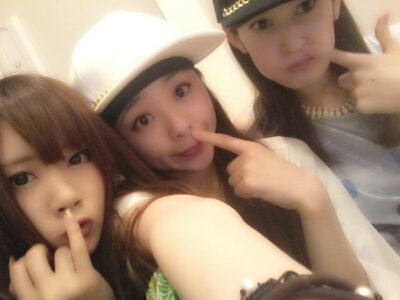
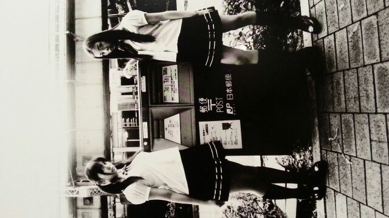

Hello★ Rottyですん //

Seitan Rotty sechan
↑お気に入りの１枚. わら
かわい−ポーズでしょ(*´∨`*)?ハハっ
最近はもう 昼間なんて
本当あついよねー (>_<)/
今日は ちょっと
気温下がったけどね.
最近 仕事で、昨日の取材でも
大人の人に すごい笑われる(/> <)/
「どうしてそんな
笑うんですか(*´З`*)？」
って聞いたら
「まひろちゃんが、
ずっと笑ってるから
つられるんだよ(>∨<)!」
って言われました ...笑
自分で こんなに笑ってることに
きずかず...
ちょっとしてから
『・・・・っあ！
自分の笑顔で
人をこんなに笑顔にできたよ！
今っ★☆★!
わいわーいヽ(・∀・)ノ』
って思えたよ 。いゃん ♪
なんか取材中 楽しくてしょぅが
なかったんですね... 自分(^ω^)
EX大衆の取材の時に
「ギャップありすぎ!
もっと しっかりしてハキハキした子と思ってきたら 全然ちゃうかった !
なんかしゃべり方が...
マイペースってゆうかぁ〜、、」
って言われたんですけど...
それさっき smartの時も
言われました(/-＼*)。笑
隣で マネージャーも笑ってるし
なんか
自分を見て皆が笑ってるんやけど
自分を見て笑ってる皆を見て
まひろも笑ってるし
なんか、よう分からんなって
とりあえず笑ってた 笑
...
そんなこんなで前回のblogで
貼ったこの白黒写真 !
大阪 梅田のロフト(7階)で
展示されている様です !

大阪プリンシパル公演の劇場から
歩いてすぐのところなので
ちょっくら立ち寄ってくれたら
嬉しいキモチですねっ (*^^*)
よろちくんビーム.
この写メは
プリンシパルでの控え室...
頭にバンダナを巻き、
80年代をモチーフとするため
まぁ そんな感じの衣装で
全員 ヘアスタイルはストレート
とゆう感じかなん ♪
ではでは
今日も１日お疲れ様です(´∨`)
おやすみなさい...好きだお？
のし (/ω\)